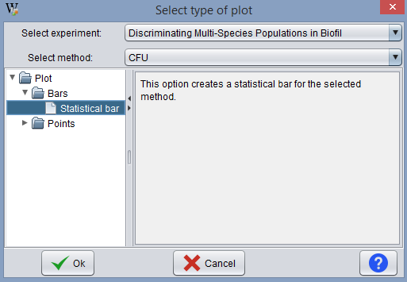
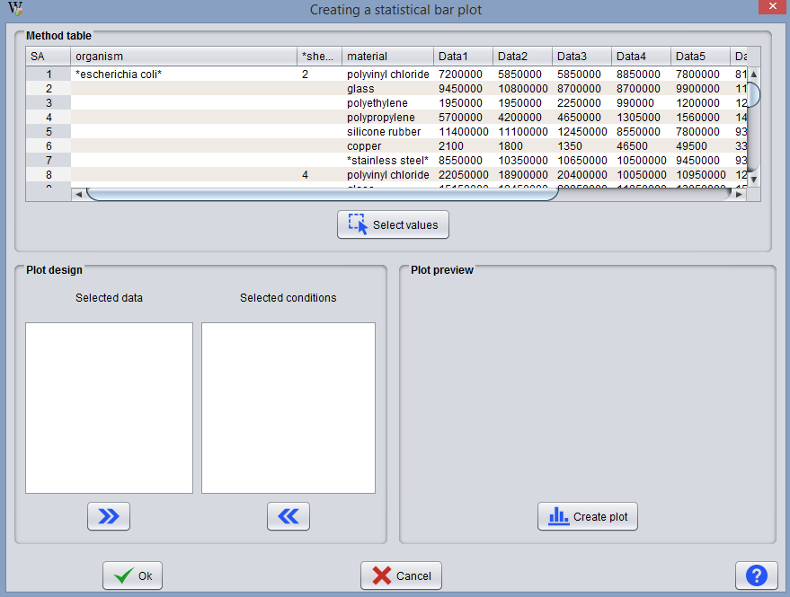
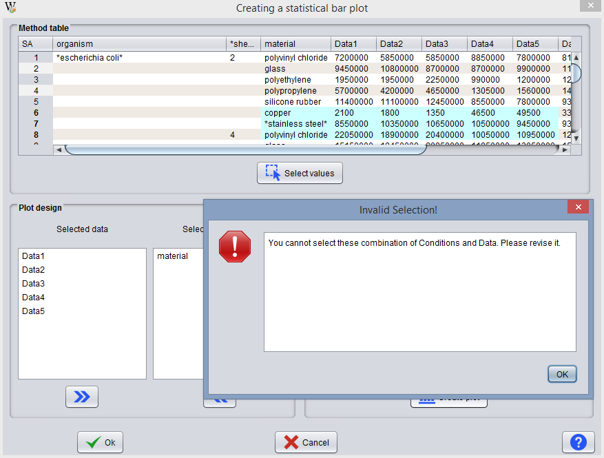
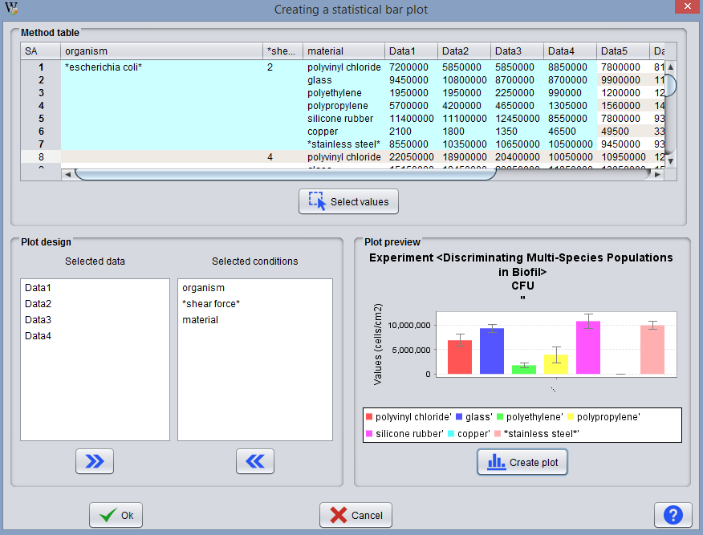

This option becomes available as soon as there is at least one experiment with analytical results associated (method objects).
To create a plot the user should indicate the experiment and specifically, the method of analysis, to be considered. Then, the user should choose the type of the plot to be constructed.

There are two types of plots in BEW:

While specifying the data series in the plot, the user is presented with a window divided into 3 areas or fields. They are listed below:
The user must select the data to be plotted. Keep in mind that it is mandatory that both data and conditions are selected. The user must select all the condition values belonging to the same parent. Below is, an example of an erroneous selection:

The figure shows the selection of the copper, *stainless steel* and polyvinyl chloride condition from different parents (*escherichia coli*#2 and *escherichia coli*#4, in organism and *shear force* condition). The correct selection would be:

When the user selects the data correctly.
The Plot Design field is filled with the selected data, distributing them between the 2 lists. If the user sees that these are correct, he must press the button Create Plot.
Once done, a preview of the chart is created in the field Plot Preview. If the preview is correct the user may press the Ok button to add it to the method (Note: If the Cancel button is pressed, the plot is not stored).
Note: For time plots the procedure is the same. The only difference is that if the method has several time conditions, the user may, once the plot is previewed, move the time columns in the method table to change the axes of the chart.